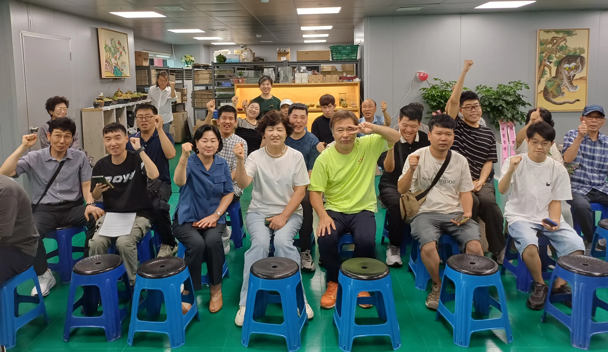

사람을 먼저 봅니다
능력과 속도에 맞는 역할을 찾습니다.
태장은 사람에게 맞는 일과 사업을 연결해
함께 오래 일할 수 있는 기반을 만들어갑니다.

PHOTO 07태장(泰張)은 안정된 일터를 만들고, 바른 가치와 함께 일하는 기회를 넓혀간다는 뜻을 담고 있습니다.
안정되고 바른 일터를 지향합니다.
함께 일하는 기회를 넓혀갑니다.
사람마다 익숙해지는 속도와 잘하는 방식이 다릅니다.
한 사람이 오래 일할 수 있는 자리를 만드는 일에 끝까지 마음을 쓰겠습니다.
농업회사법인 태장 주식회사 대표이사 이영희
인사말 전문 보기능력과 속도에 맞는 역할을 찾습니다.
사업과 고용이 함께 이어지도록 준비합니다.
기업·지역사회와 일할 기회를 넓힙니다.
사업 준비와 공동출자, 민·관 협약을 거쳐 지금의 일터를 만들어온 기록입니다.
태장의 새로운 창원 사업장을 열었습니다.
2026년 7월 9일, 인증 제2026-049호
현대비앤지스틸이 공동출자에 참여했습니다.
경상남도·경남경영자총협회·한국장애인고용공단이 업무협약을 체결했습니다.
범한메카텍·삼현·청우비제이가 공동출자했습니다.
농업회사법인 태장 주식회사를 설립했습니다.
장애인 고용과 농업 기반 사업을 준비하며 마산 진전 1만 평 부지를 매입했습니다.